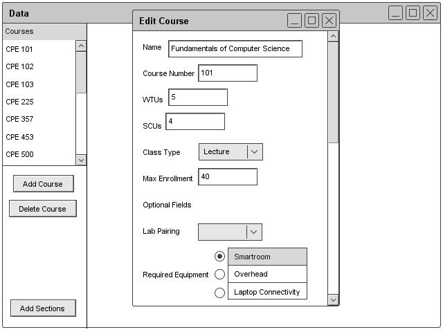

Section 2.3.2.2: Editing Course Information
The administrator can edit a course by clicking the edit button under the course section of the Schedule header. The Scheduler program displays the database window with a list of courses. The administrator can select a course to edit. After selecting a course, the program brings up a form similar to the add course form. However, this form has the previous information filled in. The administrator is free to edit the information. Once done editing, the administrator clicks save and the changes are made to the database. Figure 26 shows the edit dialogue.

Figure 26: Course Edit Dialogue
prev: course-add |
next: course-remove |
up: data-course |
index: index